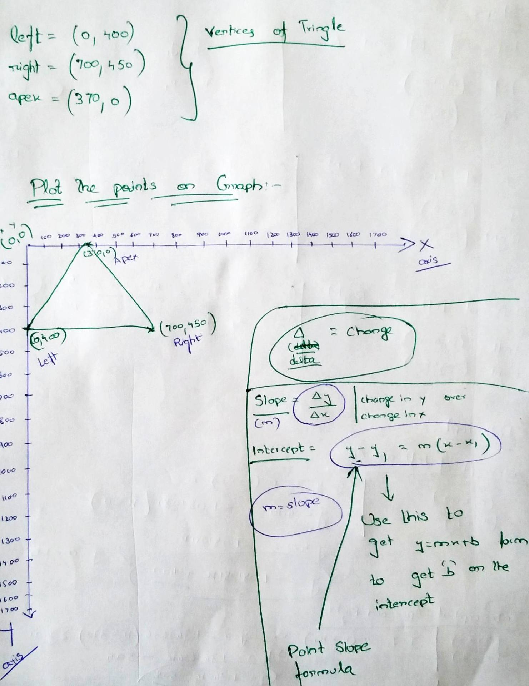
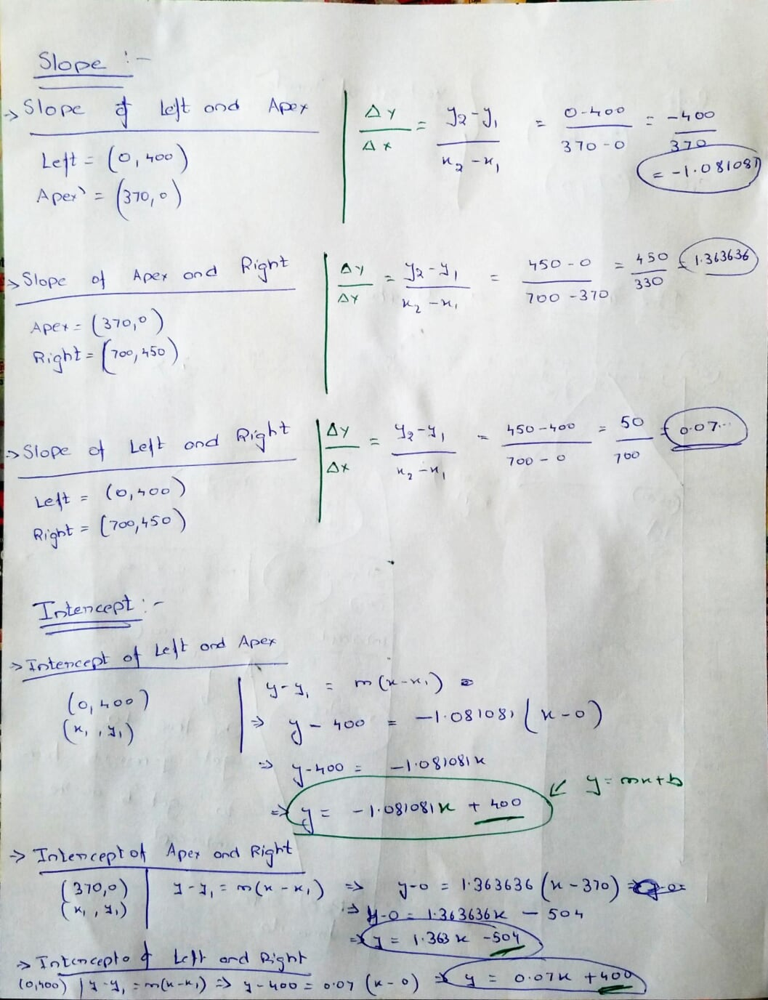
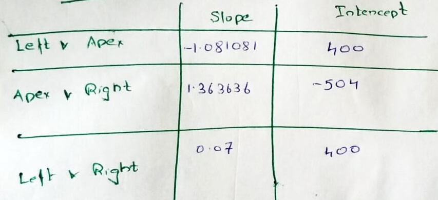
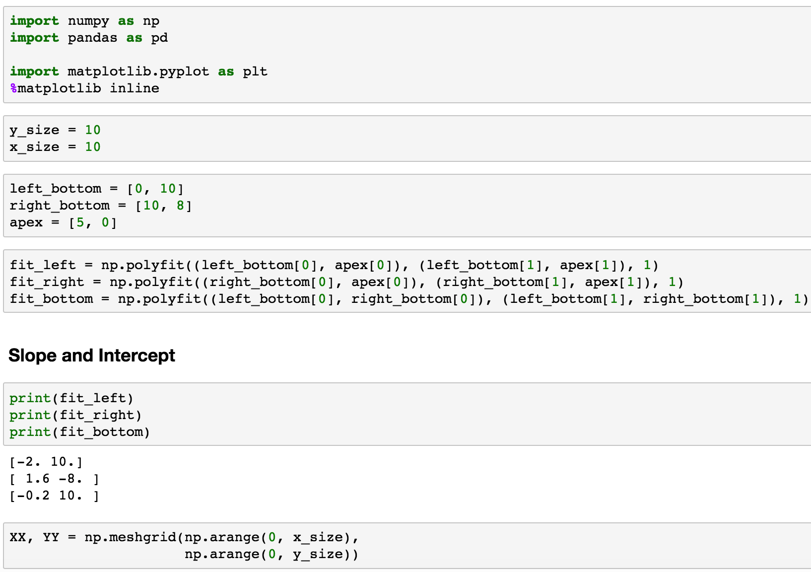
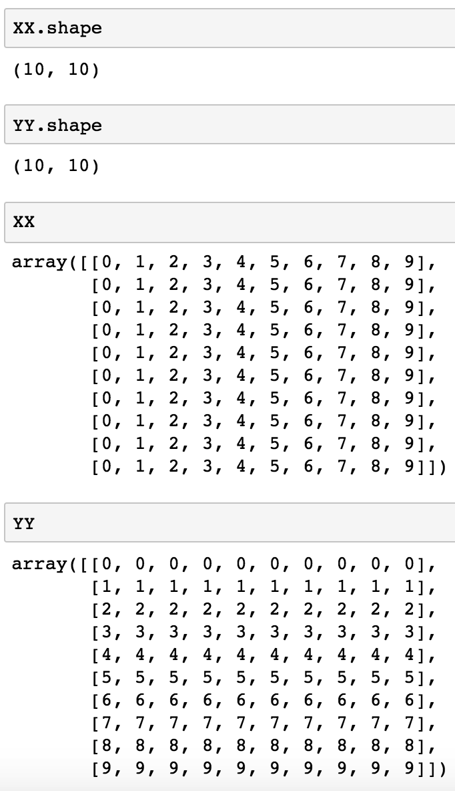
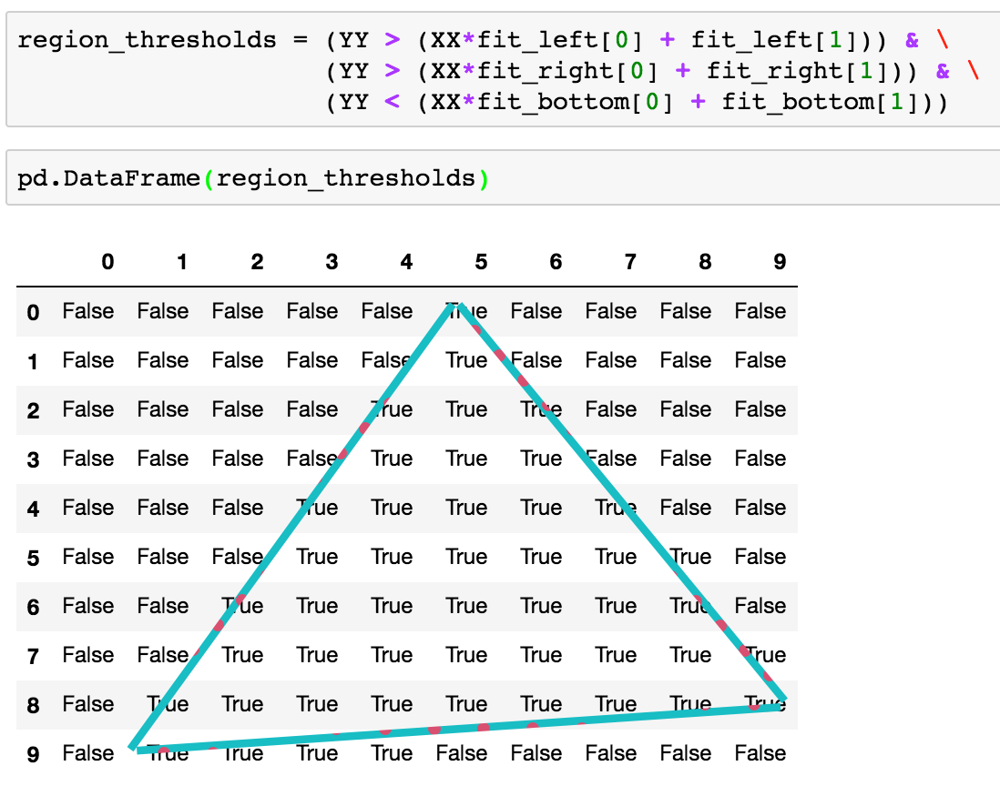
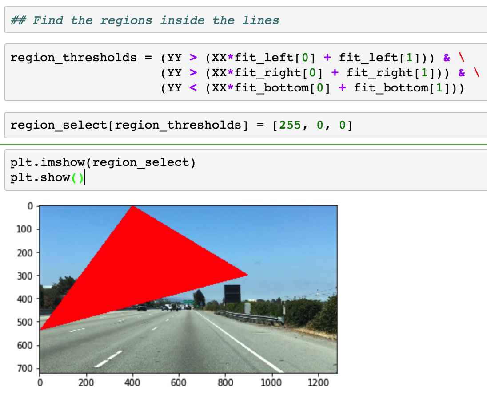

Objective:
The objective of region masking is identifying the triangular region infront of the car where the lane lines are falling.
Pen and Paper:
I spent a lot of time understanding/breaking down this concept by using pen and paper because this has little bit of math involved.
To understand this concept, lets go through what I did on the paper.
Pick some random vertices(left, right, and apex) points which fall inside the size of the image.
If you look at the below screenshot, I used
left = (0, 400)
right = (700, 450)
apex = (370, 0)
Then I plotted these vertices on the graph as seen below.

Then I computed slope and intercepts for the following lines
left to apex
apex to right
left to right

We got the following Coefficients(slope and intercepts)

Create a Mesh grid using the height and width of the image
Note: In order to understand this concept, I used a very small image size - 10 x 10

See the values of XX, and YY

Then we use the slope and intercept to find the region inside the triangle.
If you look at the image below, we are finding the regions inside the vertices using slope and intercept and then finding the values where they occur and marking them as Booleans.

Note: I used example data to understand the concepts described above. But when you implement the above concepts on an image and mask the triangular region, it would look something like this.

Ofcourse, this is just and example and it is not around the lane lines.
References
- Find coefficients - slope & intercept - https://www.youtube.com/watch?v=4il4haYASys